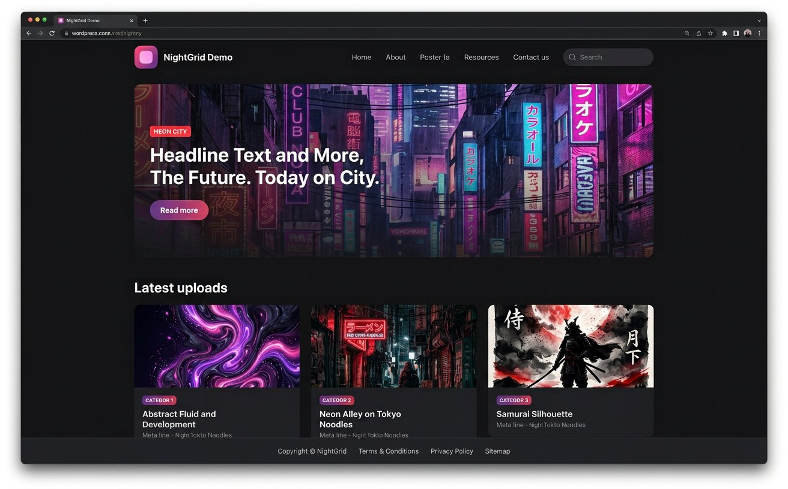
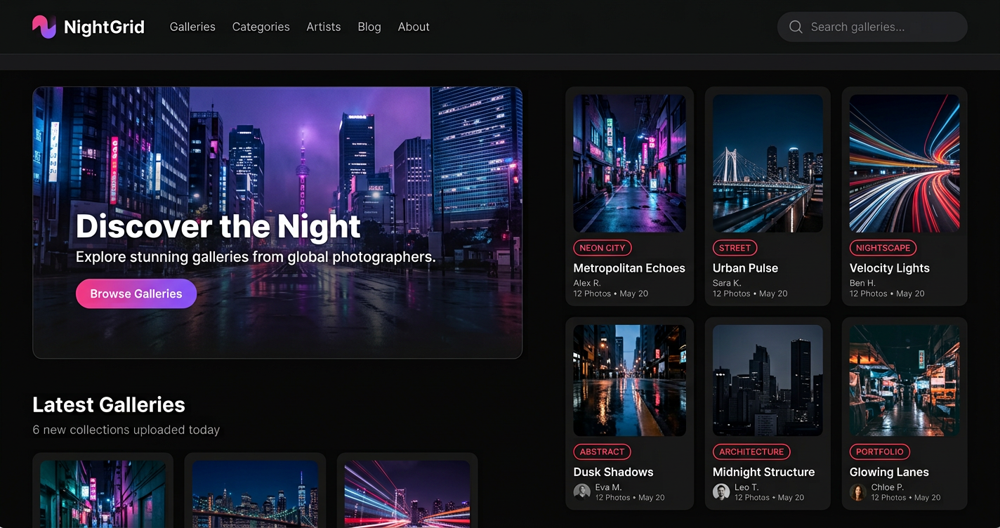
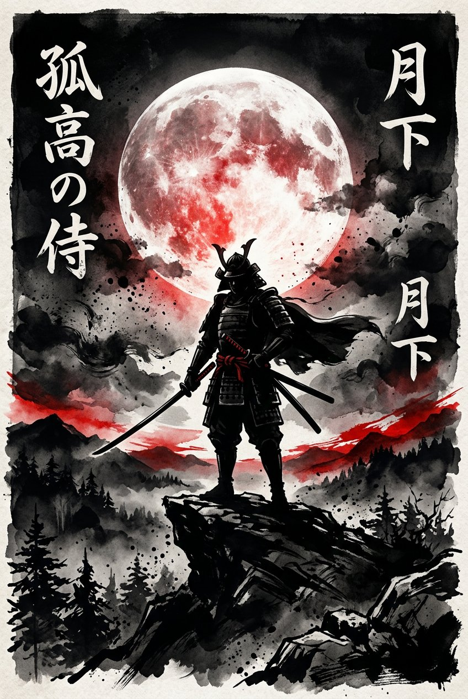
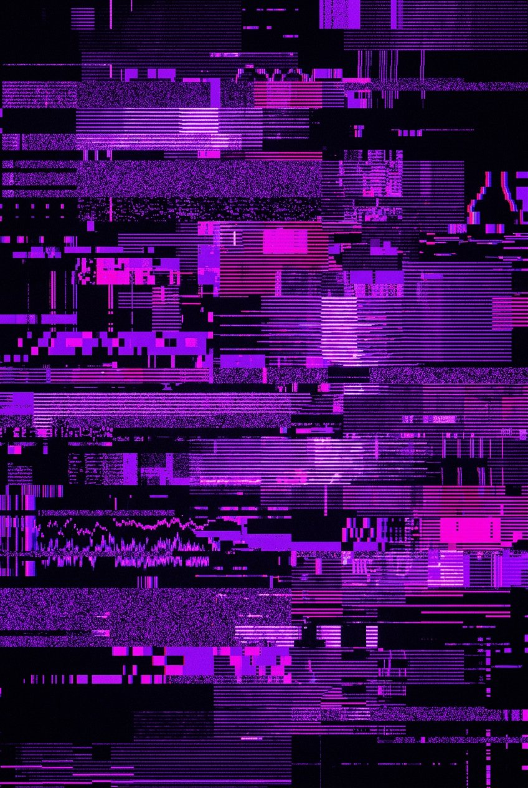
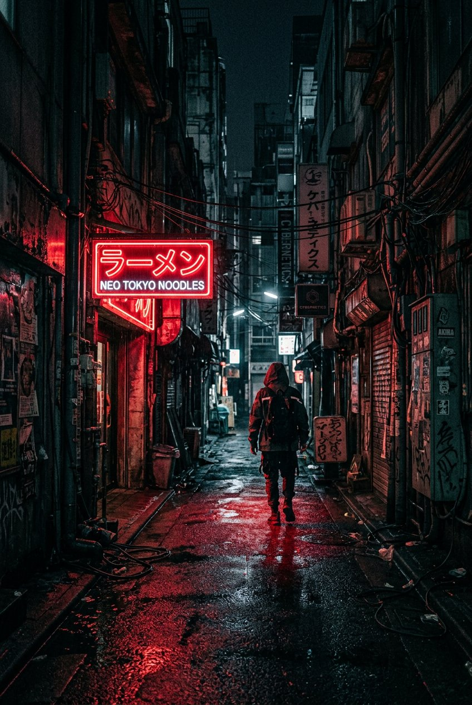
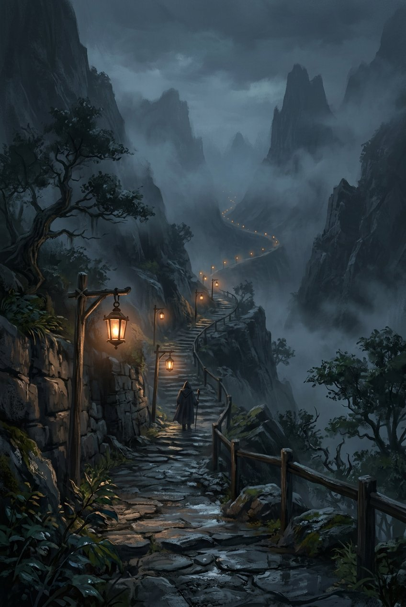
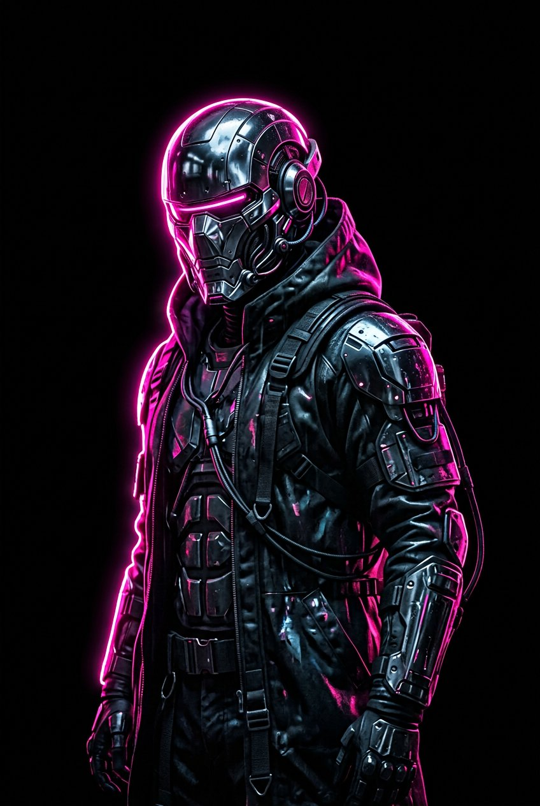

یک قالب وردپرس اورجینال با دیزاین dark و گرید poster — هدر sticky با جستجو، هیرو featured در صفحه اصلی، کارتهای قابل کلیک با شمارنده بازدید، صفحهبندی، related posts و فوتر — بدون کپی کردن هیچ فایل یا designs سایت ثالث.

وردپرس واقعی (نسخه 6.8.12) روی PHP-WASM با دیتابیس SQLite اجرا میشود — ۱۲ پست دمو در ۴ دستهبندی.
فایلهای قالب در theme/nightgrid/
کارتهای ۲:۳ با hover، badge دستهبندی و عنوان دوخطی.
پست sticky در صفحه اصلی با overlay گرادیانی و دکمه CTA.
ذخیره در post meta و نمایش روی کارتها و صفحه تکی.
فرم جستجو در هدر، منوی primary و footer، منوی موبایل.
single، archive، search، page، 404، صفحهبندی شمارهای، related posts.
فونت فارسی (Vazirmatn) و پشتیبانی کامل از راستبهچپ.
theme/nightgrid/screenshot.png (اسکرینشات قالب در وردپرس) و تصاویر AI-generated دمو:






کد کامل روی branch arena/061b6379-qwen — اجرای لوکال:
# 1) وابستگی PHP-WASM mkdir -p .wp-run && cd .wp-run && npm init -y && npm install @php-wasm/node && cd .. # 2) وردپرس 6.8.12 از آینه GitHub + درایور SQLite curl -sL -o /tmp/wp.tgz https://codeload.github.com/WordPress/WordPress/tar.gz/refs/tags/6.8.12 mkdir -p wordpress && tar xzf /tmp/wp.tgz -C /tmp && cp -r /tmp/WordPress-6.8.12/. wordpress/ curl -sL -o /tmp/sq.tgz https://codeload.github.com/aaemnnosttv/wp-sqlite-db/tar.gz/refs/heads/master tar xzf /tmp/sq.tgz -C /tmp && cp /tmp/wp-sqlite-db-master/src/db.php wordpress/wp-content/db.php ln -s ../../../theme/nightgrid wordpress/wp-content/themes/nightgrid # wp-config.php با saltهای تصادفی داخل wordpress/ بسازید # 3) اجرای سرور پیشنمایش cd .wp-run && NODE_PATH=$PWD/node_modules PORT=8080 node ../wp-preview-server.js
سپس از /wp-admin/install.php وردپرس را نصب و قالب NightGrid را فعال کنید.